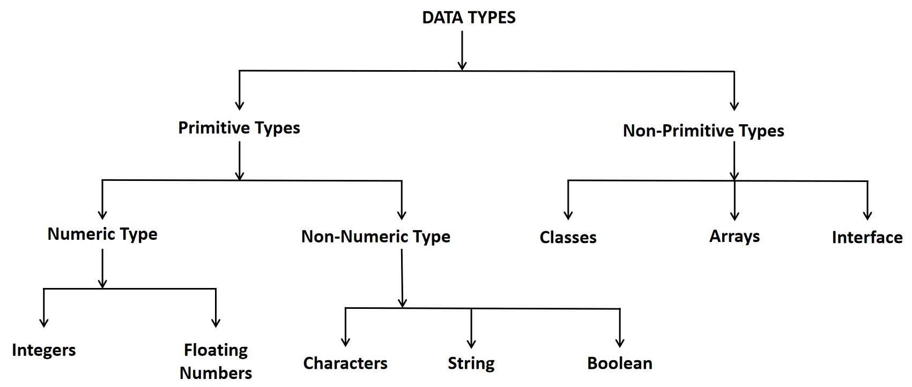

DATA TYPES
A data type, in programming, is a classification that specifies which type of value a variable has and what type of mathematical, relational or logical operations can be applied to it without causing an error.
Most programming languages support basic data types:
| DATA TYPES | USED FOR | EXAMPLES |
|---|---|---|
| String | Alphanumeric characters | hello world, Alice, Bob123 |
| Integer | Whole numbers | 7,12,999 |
| Float(floating point) | Number with a decimal point | 3.15,9.06,00.13 |
| Character | Encoding text numerically | 97(in ASCII,97 ia lower case 'a') |
| Boolean | Representing logical values | TRUE,FALSE |
This data types defines the operation that can be done on the data, meaning of the data, and the way the values of that type can be stored.A data type provides a set of values from which an expression (i.e. variable, function, etc) may take its value.
Example for String data type:
String greeting = "Hello World";
Example for Integer data type:
int myNum = 100000;
Example for Float data type:
float myNum = 5.75f;
Example for Character data type:
char myGrade = 'B';
Example for Boolean data type:
boolean isJavaFun = true; boolean isFishTasty = false;
In JAVA programming, we have to deal with the various types of data. Hence, it is necessary for a programmer to select a appropriate data type according to the data used in the program.
Primitive Types:
- These are the data types which are independent of any other type.
- Also known as basic data types.
- For example: byte,int,long,float,double,etc
- System developers have defined them.
- Integer Type: In general, and in our tutorial, the int data type is the preferred data type when we create variables with a numeric value.The int data type can store whole numbers from -2147483648 to 2147483647.
- Floating Type: The float data type can store fractional numbers from 3.4e-038 to 3.4e+038. Note that you should end the value with an "f".
- Character Type:
- Boolean Type:
- Non-primitive data types are called reference types because they refer to objects.
- These are the data types which are directly or indirectly dependent on primitive data types.
- Also known as derived data types.
- They store data value with reference to the addresses or locations.
int myNum = 100000;
| DATA | DATA TYPES | Bit Size | Format |
|---|---|---|---|
| Byte | byte | 8 bits | byte a; a = 5; |
| Short | short | 16 bits | short b; b = 12; |
| Integer | integer | 32 bits | int c; c = 214; |
| Long Integer | long | 64 bits | long d; d = 45687; |
| Byte | byte | 8 bits | byte a; a = 5; |
float myNum = 5.75f;
| DATA | DATA TYPES | Bit Size | Format |
|---|---|---|---|
| Small range of decimal values | float | 4 bytes | float m; m = 34.45; |
| Wide range of decimal values | double | 8 bytes | double d; d = 45687; |
The char data type is used to store a single character. The character must be surrounded by single quotes, like 'A' or 'c'.
char myGrade = 'B';
| Non-Numeric | Character Types | Bit Size | Format |
|---|---|---|---|
| Single character(An alphabet or a special character.) | char | 2 bytes | Char p; p = 'A'; Char p; p = 'A'; |
| More than one character/a word/a sentence | string | More than 2 bytes | String str; Str = "Vidyala"; |
It is special type in which a variable contains a constant as 'True' or 'False' in order to ensure whether a logical condition is satisfied or not. A boolean data type is declared with the boolean keyword and can only take the values true or false.
boolean isJavaFun = true;
boolean isFishTasty = false;